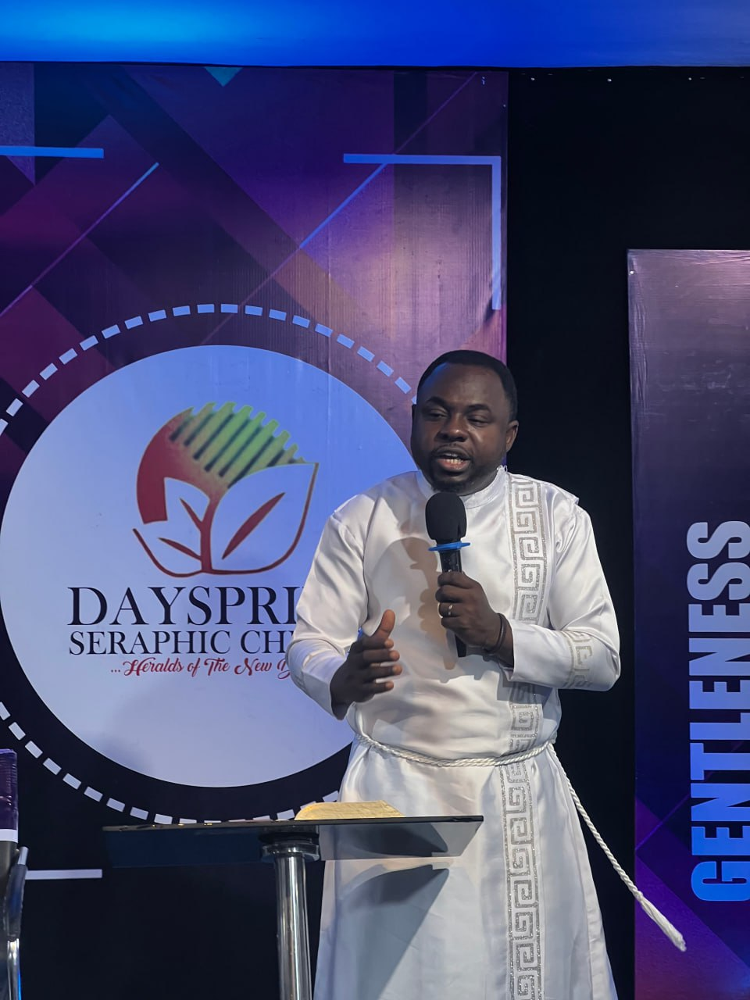

Apostle John Doe
Apostle
Church: Dayspring Seraphic Church, Akure
Date of Birth: January 15, 1960
Ordination Year: 2020
Biography
Pastor Sam has been serving as the Senior Pastor at Dayspring Seraphic Church for over 4 years. He holds a Master's degree in Agricultural Extension and is passionate about sharing the gospel and mentoring the next generation of leaders. Under his guidance, the church has expanded its outreach programs and established a strong community presence.
"The greatest ministry is the ministry of love and service to God's people."
- Apostle John Doe
Sed ut perspiciatis unde omnis iste natus error sit voluptatem accusantium doloremque laudantium, totam rem aperiam, eaque ipsa quae ab illo inventore veritatis et quasi architecto beatae vitae dicta sunt explicabo.